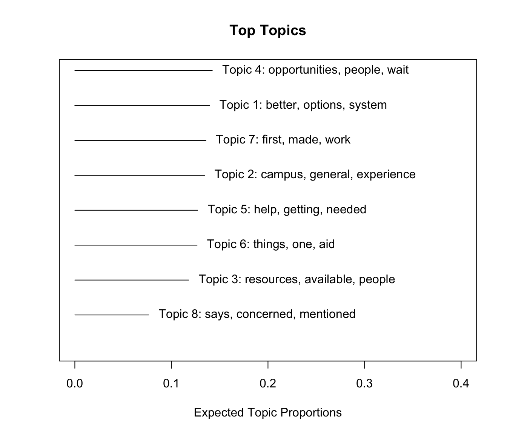
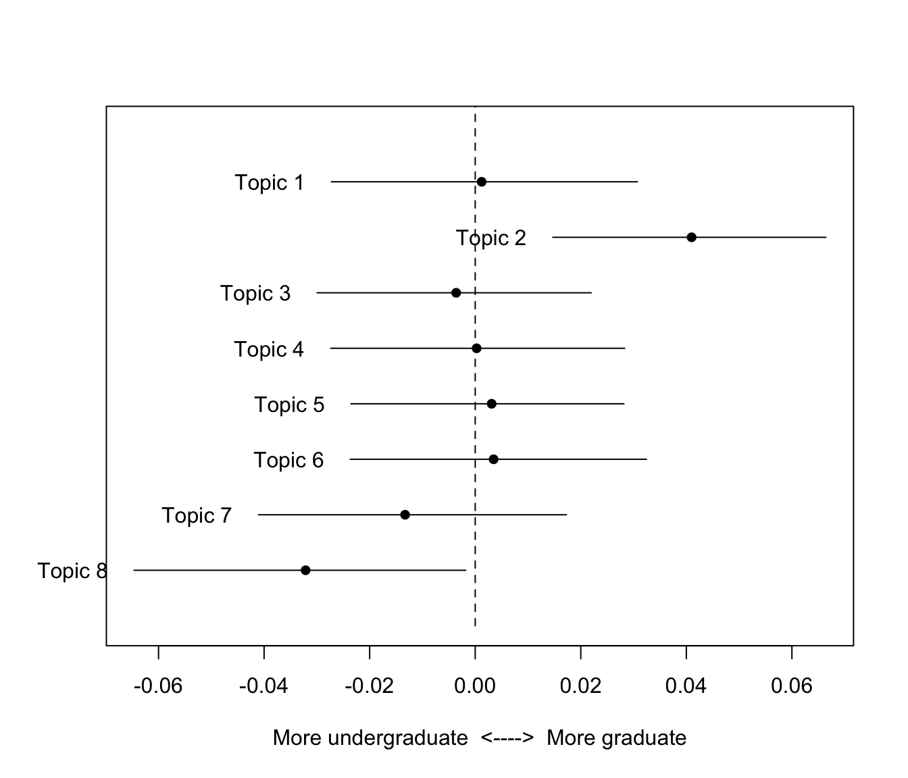

stm v1.3.10 successfully loaded. See ?stm for help.
Papers, resources, and other materials at structuraltopicmodel.comvcu <- load_vcu()Data for this chapter: data/vcu_cares_long.csv
LDA gave us themes, but it treats every student the same. It cannot tell us whether graduate students raise different themes than undergraduates, except by a second step after the fact: take each document’s topics and compare them across groups by hand.
The structural topic model (STM) (Roberts, Stewart, & Tingley, 2019) builds that comparison into the model. You tell it about document-level characteristics, such as student level, and it lets the prevalence of each topic (how much of the text belongs to it) depend on them. The result is a topic model that can answer “which topics are more common among graduate students, and how sure are we?”
By the end of this chapter you will be able to prepare documents for STM, fit a model, read its word lists, and test whether topic use differs between two groups.
stm v1.3.10 successfully loaded. See ?stm for help.
Papers, resources, and other materials at structuraltopicmodel.comvcu <- load_vcu()STM does everything LDA does, and then some. If you read Chapter 4, the core ideas (topics are word lists, documents are mixes of topics, you choose K) all carry over.
| LDA | STM | |
|---|---|---|
| Finds topics from word co-occurrence | Yes | Yes |
| Topic prevalence can depend on covariates | No | Yes (prevalence) |
| Topic wording can depend on covariates | No | Yes (content) |
| Built-in tools for choosing K and for effects | Few | Many (searchK, estimateEffect) |
A covariate is just a characteristic of each document, such as the student’s level. We use the first extension, prevalence: “does this characteristic change how much a student talks about each topic?” The second, content, asks “does it change which words they use for the same topic?” It is powerful but needs more data per group than we have.
As before, we combine each student’s answers into one document. This time we also keep a covariate: student level. A small number of students are professional or missing a level, and one-off groups that small cannot support an estimate, so we compare undergraduates with graduate students.
# A tibble: 2 × 2
level n
<fct> <int>
1 Undergraduate 1016
2 Graduate 193filter(level %in% c("Undergraduate", "Graduate")) keeps answers from students in those two groups (%in% means “is one of”).group_by(resp_id, level) followed by summarise(text = paste(text, collapse = " ")) glues each student’s answers into one block of text. This is the same “one document per student” idea as in the LDA chapter. We group by level as well so that the level comes along with each student.mutate(level = factor(...)) turns level into a factor, a column with a fixed list of categories in a stated order. The order matters: the first level, “Undergraduate,” becomes the reference group that the other is compared to, which will matter when we read the results.count(docs, level) shows how many students are in each group.textProcessor()
STM has its own preprocessing helper. By default it lowercases, removes punctuation and numbers, drops stop words, and stems words (cuts them to a root). We turn stemming off so that the topic words stay readable, and pass the same domain stop words used earlier.
custom_stops <- c("vcu", "student", "students", "like", "get", "just",
"really", "also", "can", "lot")
processed <- textProcessor(
documents = docs$text,
metadata = docs,
stem = FALSE,
customstopwords = custom_stops,
verbose = FALSE
)
# Drop words that appear in fewer than 5 documents, and the documents that
# end up empty. prepDocuments keeps the metadata aligned.
out <- prepDocuments(processed$documents, processed$vocab, processed$meta,
lower.thresh = 5, verbose = FALSE)
length(out$documents); length(out$vocab)[1] 1209[1] 424textProcessor() takes the text (documents) and the table of characteristics that goes with it (metadata). stem = FALSE turns off stemming. customstopwords adds our own stop words. verbose = FALSE silences progress messages.processed, bundles three things: documents (the text converted to word counts), vocab (the list of words), and meta (the matching characteristics table). The dollar sign (processed$vocab) picks one of them out.prepDocuments() cleans up further. The option lower.thresh = 5 removes words that appear in fewer than five documents (the same pruning we did for LDA), and removes any documents left empty.If textProcessor or prepDocuments drops a document, the metadata rows must go with it. Always use out$meta, never the original docs, in everything that follows. Mixing them up silently pairs the wrong covariate with the wrong document.
K <- 8
fit <- stm(
documents = out$documents,
vocab = out$vocab,
K = K,
prevalence = ~ level,
data = out$meta,
init.type = "Spectral",
seed = 664,
verbose = FALSE
)The options of stm() that matter:
| Option | What it means |
|---|---|
documents, vocab
|
The prepared text and word list |
K = 8 |
The number of topics. We pick eight as a starting point, as with LDA |
prevalence = ~ level |
The key option. This is a formula: the ~ (tilde) reads “depends on.” So topic proportions are allowed to depend on level. You can add more covariates with +, for example ~ level + source
|
data = out$meta |
The table that holds those covariates, one row per document |
init.type = "Spectral" |
How the model begins its search. “Spectral” is a deterministic, stable starting point, so you get the same topics each time without hunting for a good random seed |
seed = 664 |
A random seed, for the parts that still involve chance |
verbose = FALSE |
Do not print the progress of each iteration |
labelTopics() reports four word lists per topic. Two matter most:
(The other two, Lift and Score, are other ways of favoring distinctive words.)
labelTopics(fit, n = 7)Topic 1 Top Words:
Highest Prob: better, options, system, good, wish, people, cost
FREX: options, charge, commuter, nobody, lower, handle, looked
Lift: email, ride, safe, expectations, syllabus, handle, looked
Score: email, options, charge, handle, looked, seemed, nobody
Topic 2 Top Words:
Highest Prob: campus, general, experience, overall, hear, notice, near
FREX: map, near, signs, walks, weather, live, rarely
Lift: safety, map, signs, live, rarely, police, presence
Score: safety, campus, live, rarely, map, signs, walks
Topic 3 Top Words:
Highest Prob: resources, available, people, experience, learn, place, single
FREX: learn, place, single, resources, create, available, health
Lift: mental, clinic, learn, place, health, single, create
Score: mental, resources, available, create, learn, place, single
Topic 4 Top Words:
Highest Prob: opportunities, people, wait, feel, reduce, academic, center
FREX: wait, reduce, academic, ahead, compared, got, improved
Lift: therapy, wait, reduce, times, ahead, compared, academic
Score: therapy, wait, reduce, ahead, compared, academic, needs
Topic 5 Top Words:
Highest Prob: help, getting, needed, support, faculty, give, communication
FREX: needed, getting, feedback, help, faculty, assignments, planning
Lift: chances, feedback, assignments, needed, contact, took, weeks
Score: chances, help, feedback, needed, getting, assignments, faculty
Topic 6 Top Words:
Highest Prob: things, one, aid, run, best, staff, campus
FREX: best, one, aid, welcoming, felt, inconsistent, next
Lift: welcome, paperwork, front, best, knowledge, desk, one
Score: welcome, one, aid, best, feeling, things, inconsistent
Topic 7 Top Words:
Highest Prob: first, made, work, part, year, easier, everyone
FREX: made, work, big, difference, everyone, year, first
Lift: loan, laptop, made, big, difference, dont, work
Score: loan, made, big, difference, first, work, everyone
Topic 8 Top Words:
Highest Prob: says, concerned, mentioned, wants, thinks, positive, helped
FREX: wants, thinks, says, trouble, concerned, change, mentioned
Lift: asks, change, changes, expanding, improving, lacking, recommends
Score: lacking, says, thinks, wants, appreciates, change, trouble n = 7 asks for seven words in each list. Name each topic from FREX plus Prob, as you did for LDA.
Here is how the topics look on the synthetic data (the starting point is deterministic, so you should see the same ones). Reading each topic’s FREX and Lift words:
| Topic | Words that stand out | A reasonable name |
|---|---|---|
| 1 | options, charge, commuter, nobody, lower | Commuting options and cost |
| 2 | map, near, signs, walks, safety, police | Campus safety and signage |
| 3 | learn, place, resources, mental, clinic, health | Health resources |
| 4 | wait, reduce, therapy, academic, compared | Wait times for support |
| 5 | feedback, assignments, faculty, planning | Faculty feedback |
| 6 | aid, paperwork, front, welcome, knowledge, inconsistent | Staff and aid paperwork |
| 7 | laptop, loan, made, big, difference | Technology help that “made a difference” |
| 8 | says, wants, thinks, asks, recommends, mentioned | A writing style, not a subject |
Notice topic 8. Its words (“says,” “wants,” “thinks”) are not about anything at VCU. They come from the third-person note-taking style of the paper forms, where interviewers wrote down what students said instead of quoting them. A topic model finds any recurring pattern of words, and a style of writing is one. That is not a failure, but it is a reminder that a topic is a pattern in words, which may or may not be a theme. Whenever one topic’s words look like grammar or phrasing, ask whether it tracks how the text was collected rather than what people said.
Names like these are your interpretation, and a colleague might name them differently. Write down your reasoning so that it can be questioned.
Then check the names against real text with findThoughts(), which returns the documents most dominated by a topic.
thoughts <- findThoughts(fit, texts = out$meta$text, n = 2, topics = 1:3)
thoughts$docs[[1]][1] "Helpful how things are run. my favorite part is the weekend activities, Helpful email system Add more bus passes, Put the email system online"
[2] "Course sequencing is one of the best things about VCU. The commuter options kept me on track Feels like nobody is in charge of the system. hire more people for the syllabus expectations. Better intramural sports"texts supplies the original text to display, n = 2 asks for the two best examples per topic, and topics = 1:3 limits it to topics 1 through 3. (1:3 is R shorthand for “1, 2, 3.”) The result is a list with one entry per topic, so thoughts$docs[[1]] shows the examples for the first. The double square brackets pick one item from a list.
Repeat for each topic. A topic whose top documents do not hang together is not ready to be reported.

This draws one row per topic, sorted from the largest to the smallest. Each row has a horizontal line running from zero to the topic’s expected share of all the text, and a label listing the topic’s top words. n = 3 sets the number of words in each label (we use three so that the labels fit; with more, the longest ones run off the edge of the chart), and xlim sets the horizontal range. (This chart uses R’s basic plotting, not ggplot2, so it looks a little different from the others.)
What the chart shows in our run. The horizontal axis is the expected topic proportion: the average share of each student’s text that belongs to the topic. Read the end of each line against the axis.
As with the LDA chart, size is not importance. A topic that is large because it collects generic words (“better, options, system, good” in topic 1) and a topic that is small because it is specific can both be useful. The point of this chart is orientation: it tells you how the text is divided before you look at the differences between groups.
Now we can ask whether graduate and undergraduate students differ. estimateEffect() fits a simple regression for each topic, and then correctly accounts for the fact that each document’s topic proportions are themselves estimates rather than known facts.
effect <- estimateEffect(1:K ~ level, fit, metadata = out$meta)
summary(effect, topics = 1:3)
Call:
estimateEffect(formula = 1:K ~ level, stmobj = fit, metadata = out$meta)
Topic 1:
Coefficients:
Estimate Std. Error t value Pr(>|t|)
(Intercept) 0.1350759 0.0053452 25.270 <2e-16 ***
levelGraduate 0.0009222 0.0148613 0.062 0.951
---
Signif. codes: 0 '***' 0.001 '**' 0.01 '*' 0.05 '.' 0.1 ' ' 1
Topic 2:
Coefficients:
Estimate Std. Error t value Pr(>|t|)
(Intercept) 0.123605 0.005455 22.661 <2e-16 ***
levelGraduate 0.040688 0.013260 3.068 0.0022 **
---
Signif. codes: 0 '***' 0.001 '**' 0.01 '*' 0.05 '.' 0.1 ' ' 1
Topic 3:
Coefficients:
Estimate Std. Error t value Pr(>|t|)
(Intercept) 0.118966 0.005525 21.532 <2e-16 ***
levelGraduate -0.003503 0.013396 -0.262 0.794
---
Signif. codes: 0 '***' 0.001 '**' 0.01 '*' 0.05 '.' 0.1 ' ' 1A regression estimates how much an outcome changes when something else changes. Here the outcome is “the share of a student’s text that belongs to topic k,” and the “something else” is whether the student is a graduate student. The answer is a coefficient: the difference in that share between the groups. A standard error says how uncertain that difference is. A rough rule is that a coefficient more than about two standard errors from zero is unlikely to be pure chance.
1:K ~ level is the formula: “for topics 1 through K, relate the topic share to level.”metadata = out$meta supplies the covariates.summary(effect, topics = 1:3) prints the results for the first three topics.Each topic’s results have an intercept (the expected topic share for undergraduates, the reference group) and a levelGraduate coefficient (how much higher or lower graduate students are). A coefficient of 0.03 means graduate students devote 3 percentage points more of their answers to that topic. Look at the Estimate, the Std. Error, and the p-value column. The p-value is the chance of seeing a difference this big if there were really none; small values (conventionally under 0.05) suggest a real difference.
Here is what the first three topics showed. Topics 1 and 3 have coefficients near zero (0.001 and -0.004) with large p-values (0.95 and 0.79): no evidence of a difference. Topic 2 stands out. Graduate students are estimated to use it about 4 percentage points more (0.041, p = 0.002), which looks like a clear finding. The plot below shows all eight topics, and a second topic turns out to stand out too.
In the synthetic data, student level was assigned at random, so there is no real difference between graduate and undergraduate students to find. A “significant” result for topic 2 (and, as the plot below shows, a borderline one for topic 8) is therefore a false alarm. This is exactly what the next warning predicts: when you test eight topics at once, something will occasionally look significant by chance. It is also the best argument for the habit this book keeps repeating. Before believing a topic-by-group difference, read the documents behind it, and ask whether the story makes sense and whether it would hold up in a different sample.
Rather than read eight regression tables, plot the differences.

The options explained:
covariate = "level" says which characteristic we are comparing on.method = "difference" plots the difference between two groups. cov.value1 = "Graduate" and cov.value2 = "Undergraduate" say which two, and the difference is the first minus the second. So a dot to the right of zero means graduate students use the topic more.model = fit supplies the fitted model (needed for labels).xlab sets the label of the horizontal axis. labeltype = "custom" with custom.labels lets us label each row “Topic 1,” “Topic 2,” and so on, instead of listing words. (paste("Topic", 1:K) builds those labels.)Read this the way you read any effect estimate: look at the interval, the horizontal line through each dot, which shows the range of plausible differences. If the line crosses zero, the data are consistent with no difference at all. Most intervals will cross zero, because we have fewer than 200 graduate students. A topic whose interval clearly excludes zero is a candidate finding. Go back and read the graduate and undergraduate documents for that topic before saying anything about it.
Each row is a topic. The dot is the estimated difference in the share of a student’s text (graduate minus undergraduate), and the line is its 95% interval. The dashed vertical line marks zero, “no difference.” A dot to the right of it means graduate students use the topic more; to the left, undergraduates do. The whole horizontal range is small, from about -0.06 to +0.06, which means differences of at most a few percentage points.
Both of those results are false alarms. Student level was assigned at random in this synthetic data, so there is nothing to find. Two of eight is a bit more than the roughly 0.4 you would expect by chance at the 5% level, but it is not out of the question, and it is a vivid illustration of why the “eight topics, eight tests” warning below matters. This chart looks like a finding. Reading the documents behind topics 2 and 8, and noticing that a plausible story is easy to invent, is what protects you from reporting it.
A note on the picture itself: the labels are drawn next to the dots, so a label may touch the dashed line (as “Topic 2” does). That is cosmetic and comes from the plotting function.
We are looking at eight differences at once. If there were no true differences, about one interval in twenty would still miss zero by chance, and with eight topics you should expect it to happen sometimes. (A standard remedy is to demand stronger evidence when you run many tests, for example by dividing the 0.05 cutoff by the number of tests.) Treat the topic-by-level comparisons as a way to generate hypotheses, and confirm anything interesting by reading and by a different sample if you can.
searchK()
STM includes tools for comparing values of K using several diagnostics.
This block is set to display only (eval: false) because it takes a few minutes. searchK() fits a model for each K you list and measures:
| Diagnostic | In plain terms | Look for |
|---|---|---|
| Held-out likelihood | How well the model predicts words in documents it did not see during fitting | A K where the curve stops climbing |
| Residuals | How much the model’s predictions miss by | Lower is better |
| Semantic coherence | Whether a topic’s top words tend to appear together in the same documents | Higher is better, but it usually falls as K grows |
| Exclusivity | Whether a topic’s words are unique to it | Higher is better |
plot(k_search) shows them side by side. As with LDA, the diagnostics narrow the range and you choose within it by reading the topics.
findThoughts().estimateEffect() gives properly uncertain comparisons of topic prevalence between groups. Read the intervals, not just the dots.out$meta, not your original data frame, after preprocessing.